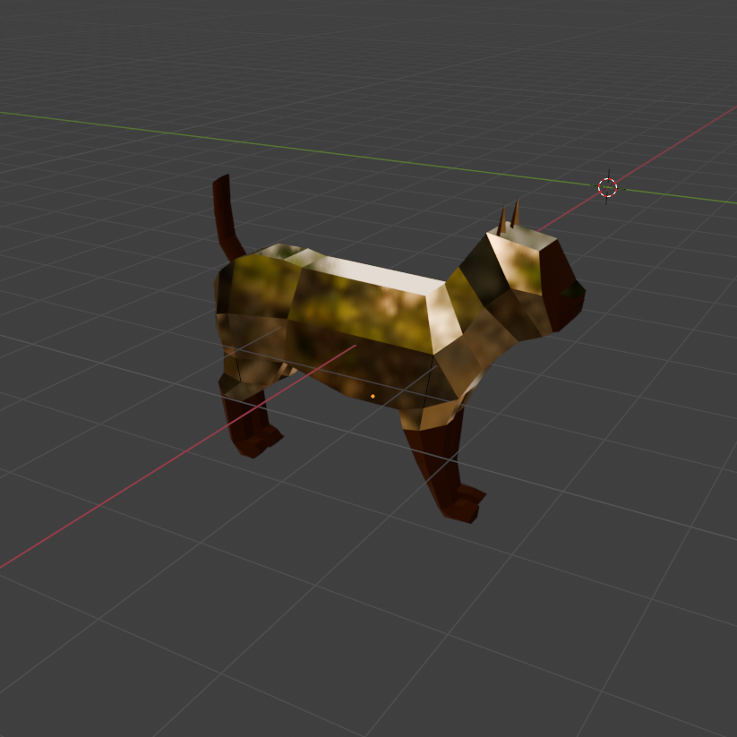
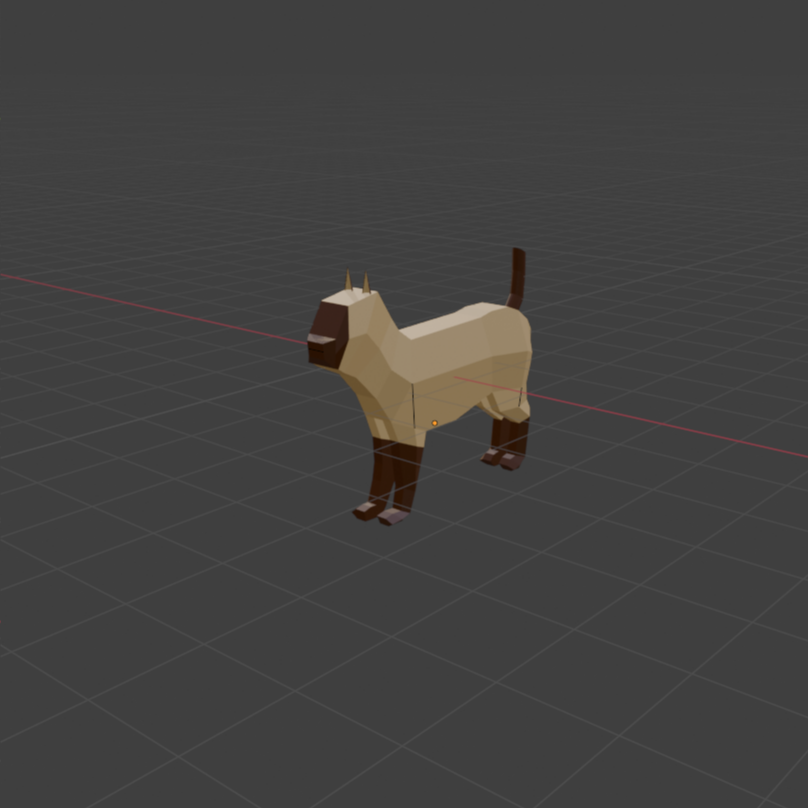

Low Poly
Low Poly
Crea un animal low poly "calcando" algún dibujo de los niños. Aplica color usando una paleta de colores y mapeando las caras UV en la paleta.
Sube a Moodle
- El objeto en formato Blender y su textura
- Una segunda paleta con algún cambio o efecto en los colores.
- Subir
- imagen original
- Los dos modelos en un fichero
- Las texturas


Ir a la práctica